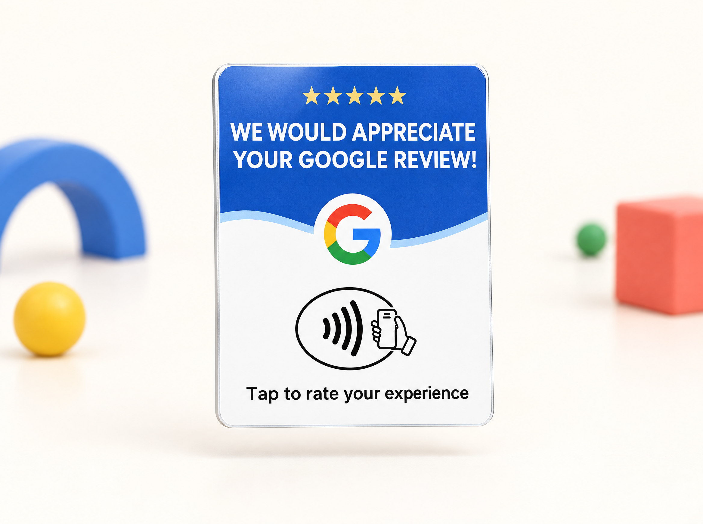

Kartu Tap
Kartu NFC Google Review biru–putih. Dipegang kasir, disodorkan waktu pelanggan membayar.
- Kedai
- Barbershop
- Klinik
Kartu Ulasan NFC
Bantu pelanggan membagikan pengalamannya. Cukup tempel HP ke kartu, halaman ulasan Google usaha Anda langsung terbuka.
Satu tap. Lebih mudah berbagi cerita.
Kartu datang sudah jadi. Link-nya kami yang urus.
Seret kartunya untuk memutar. Klik untuk membalik.
Masalahnya
Pelanggan yang puas sebenarnya tidak keberatan memberi ulasan. Yang membatalkan biasanya hal sepele. HP sudah masuk kantong. Antreannya panjang. Atau dia lupa nama persis toko Anda di Maps.
Cara kerja
Cukup nama dan alamatnya. Kami yang mencari profil bisnis Anda di Google dan menanam link-nya ke dalam chip kartu.
Tidak ada aplikasi yang perlu dipasang. Tidak ada yang perlu disetel. Keluar dari amplop, taruh di meja.
Satu kalimat dari kasir sudah cukup.
Boleh tempel HP-nya sebentar, Pak?
Produk

Kartu NFC Google Review biru–putih. Dipegang kasir, disodorkan waktu pelanggan membayar.
Berdiri sendiri di meja atau etalase. Pelanggan melihatnya tanpa perlu diingatkan.
Ditempel di meja, pintu kaca, atau mesin kasir. Paling murah kalau mau pasang di banyak titik sekaligus.
Perbandingan
Semua cara ini bisa dipakai. Bedanya ada di berapa banyak pelanggan yang benar-benar sampai ke halaman ulasan.
| Hal yang dibandingkan | Minta lisan | Stiker QR | TAPin |
|---|---|---|---|
| Perlu dijelaskan | Setiap kali | Kadang | Jarang |
| Pelanggan harus | Ingat sendiri | Buka kamera | Tempel HP |
| Jalan sebelum menulis | 4 langkah | 2 langkah | 1 langkah |
| Biaya | Gratis | Sangat murah | Sekali bayar |
| Bisa diganti tujuannya | – | Tidak | Bisa |
Harga
1 kartu tap
Rp50.000
3 kartu + 1 stand meja
Rp149.000
3 cabang ke atas
Nego
Belum termasuk ongkir. Jabodetabek 2–3 hari kerja setelah desain disetujui.
Untuk siapa
Kalau orang mencari Anda di Maps sebelum berangkat, ulasan yang menentukan mereka jadi datang atau tidak.
Tanya jawab
Pertanyaan Anda belum ada di sini? Tanya saja langsung ke kami.
Tanya lewat WhatsAppDi belakang kartu ada QR code. Yang HP-nya tidak punya NFC tinggal buka kamera dan arahkan ke situ. Tujuannya sama.
Tidak. Baik Anda maupun pelanggan. Kartunya berisi link biasa yang langsung dibuka browser bawaan HP.
Tujuan kartunya kami ubah dari sisi kami. Kartu yang sudah ada di meja Anda tetap berfungsi, tidak perlu cetak ulang.
Tidak, dan sebaiknya jangan. Kami cuma memperpendek jalan ke halaman ulasan. Isinya tetap milik pelanggan. Google menjatuhkan peringkat profil bisnis yang ketahuan memakai ulasan palsu, dan itu lebih merugikan daripada rating rendah.
Jabodetabek 2–3 hari kerja sejak desain disetujui. Luar kota ikut waktu kirim ekspedisi.
Tiap cabang dapat link sendiri. Ulasan masuk ke profil cabang yang benar, dan Anda tahu cabang mana yang paling aktif.
Kami buatkan contoh desain kartunya dulu. Kalau tidak cocok, tidak usah diteruskan. Tidak ada biaya sampai Anda setuju desainnya.